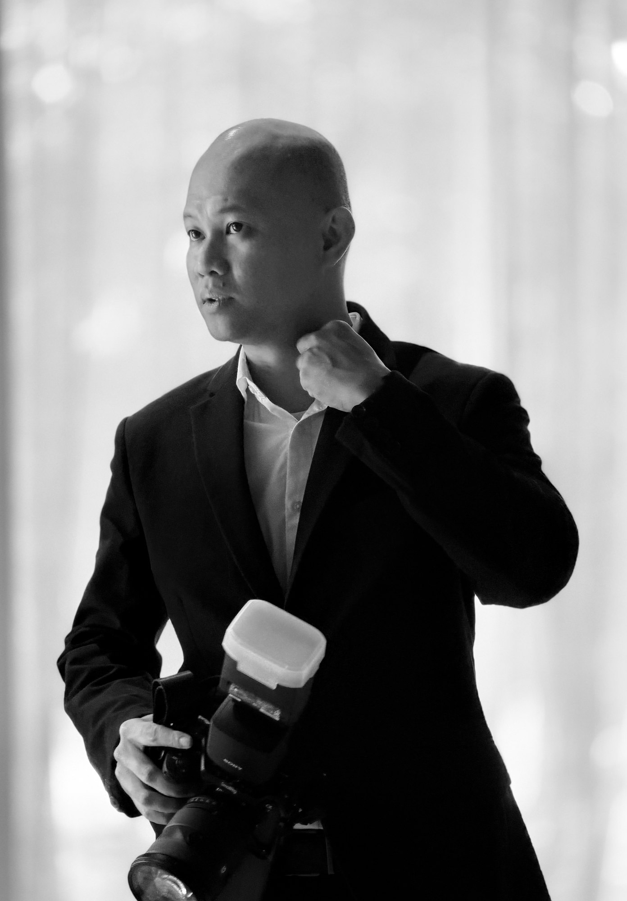

Technical work, done right
Proper lighting, sharp focus, clean sound and accurate colour. The basics decide whether a video looks professional.


ALBERT.T ENTERPRISE is a video, photography and drone company based in Kota Kinabalu, Sabah. We shoot for brands, agencies, developers, event organisers and other production houses.
A day's work might be a CEO interview, a festival highlight reel, a penthouse walkthrough or an FPV run down a race track. We bring the cameras, lights and drones each one needs.
Proper lighting, sharp focus, clean sound and accurate colour. The basics decide whether a video looks professional.
Fixed package prices, an agreed schedule, and a crew that arrives early with backups packed.

Albert Tengkuyu owns and runs ALBERT.T ENTERPRISE. He shoots, lights, flies and edits, and he is the person you deal with from the first call to the final file.
Other productions hire him too. He has worked as gaffer, grip, 1st AC, production assistant, second shooter and drone pilot on music videos, a TV documentary series and tourism shoots.
To build ALBERT.T ENTERPRISE into a trusted, creative studio known for video, photography, drone and media production in Sabah and across Malaysia.